INFO
Latest updates
v1.80 test - Process icons
v1.79 - Tutorials
v1.78 - Small updates and fixes
v1.77 - Find files recursively from a directory
v1.76 - Exclusion areas, metrics visualizer
v1.75 - DBE, drizzle options, flat dark calibration
v1.74 - Tools, stretching, sharpening
v1.73 - MultiscaleGradientCorrection
v1.72 - Ha to RGB mapping, true background
v1.71 - Fix to memory usage
v1.70 - DeepSNR, Signature, FastIntegration, Flowchart
v1.69 - GraXpert denoise
For more details on versions see GitHub page or forums.ruuth.xyz or Discord
Overview
AutoIntegrate is a PixInsight script to process FITS and other image files and run a basic image processing workflow to create a final image. Script has a GUI interface where some processing options can be selected. AutoIntegrate can do the whole image processing workflow including image calibration.
After running the script there will be integrated light images and an automatically processed final image. LRGB, color/OSC/DSLR and narrowband files are accepted.
AutoIntegrate is best suited for:
- When you are starting out with PixInsight and want to do a quick image processing before learning all the details.
- For quick calibration, alignment and integration (but not a replacement for WBPP), especially useful if you use remote observatories or other existing, pre-calibrated images or prepared masters.
- Quick generation of a reasonably good image, especially with filter combinations that may be difficult to manage when starting out.
- The possibility to have a quick look at a result and manually process the problematic steps if needed (so you do not spend a day processing an image whose color were badly balanced to start with). This is especially useful to see if your calibration/integration is good enough or leave artifacts/gradients/... that should be removed early.
AutoIntegrate works with PixInsight version 1.8.9-1 or later.
PixInsight repository link
AutoIntegrate is available as an automatic update in PixInsight. Repository link is https://ruuth.xyz/autointegrate/
Images created with AutoIntegrate script
You can find my images created with AutoIntegrate script from the following links.
- APOD 2022 January 17, Chamaeleon Dark Nebulas
- APOD 2022 September 14, Waves of the Great Lacerta Nebula
- My Astrobin page
- My Instagram page
Hashtag #autointegratescript
I recommend that you use a hashtag #autointegratescript if posting images on social media. You can find my images processed with AutoIntegrate script on Instagram with that tag.
Below is a sample output from AutoIntegrate script with otherwise default options but Crop to common area was enabled.
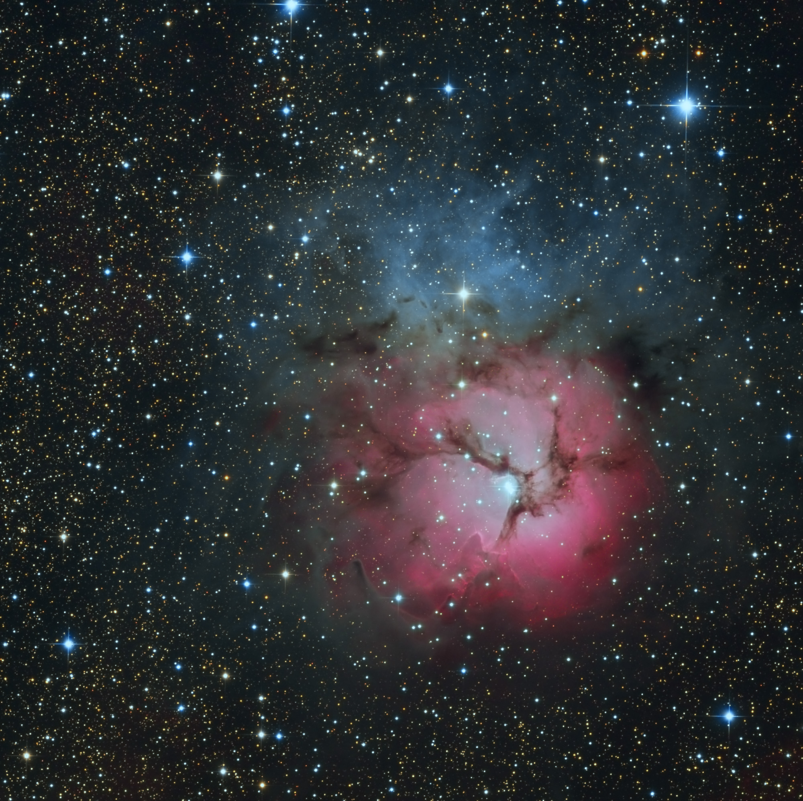
Data for this image is from Telescope Live remote telescope.
{kind=link}
YouTube videos
I have created a set of short YouTube videos that show the workflow with AutoIntegrate script.
Introduction to AutoIntegrate
LRGB Processing using AutoIntegrate
Narrowband Processing using AutoIntegrate
Comet Processing using AutoIntegrate
Below are older videos that are still valid altough the dialog looks a bit different. Basic steps are still the same.
Easy PixInsight workflow for astrophotos
PixInsight Narrowband Processing
Image Calibration and Basic Workflow

Processing Hubble Data
Hubble color palette using OSC data
Tutorials
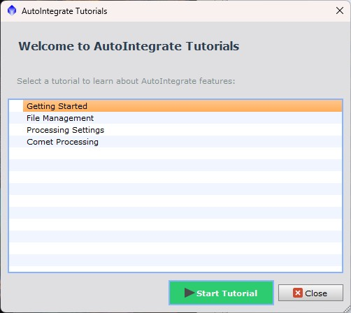{kind=link}
AutoIntegrate includes an interactive tutorial system that teaches you the script hands-on, right in the interface. When you start a tutorial, the script highlights the controls you need and displays helpful tips that explain what each feature does.
Available Tutorials:
- Getting Started - Learn the essential workflow: add your files, choose a target type, and run your first integration. Perfect for new users.
- File Management - Master organizing your input and and output files.
- Processing Settings - Explore processing options like cropping, gradient correction and stretching.
- Comet Processing - Learn how to process comet images using specialized techniques.
The tutorial system automatically navigates between tabs, highlights relevant controls with animated borders, and tracks your progress. You can pause, go back, or skip ahead at any time.
{kind=link}
Access tutorials from the "Tutorials" button in the main dialog, or run them automatically from the welcome screen on first launch.
AutoIntegrate dialog screens
Below are the examples of the script dialog screens. Often it is best to start with default options, add files and hit the Run button.
{kind=link}
{kind=link}
{kind=link}
{kind=link}
Script remembers the last open or closed states of collapsible sections in the dialog. It is useful for example with smaller screens where it is possible to start with only minimal sections open.
Downloading the script
Using PixInsight update system
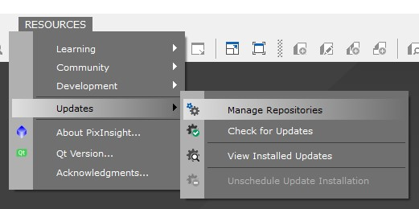{kind=link}
It is possible to automatically install and update AutoIntegrate script by adding it to the PixInsight update repository. Whenever PixInsight is started it will then check for updates to AutoIntegrate. To enable automatic updates you need to add the following Url to the PixInsight Resources/Updates/Manage Repositories.
https://ruuth.xyz/autointegrate/
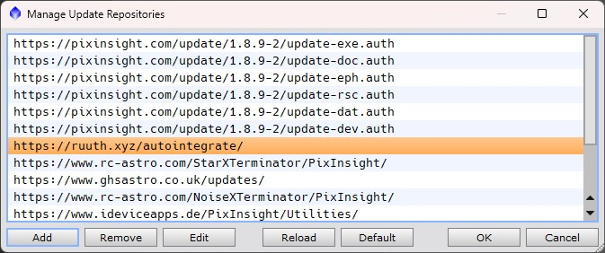{kind=link}
After you have added the link to AutoIntegrate repository you should check for updates by clicking Resources/Updates/Check for Updates. To install updates you need to restart PixInsight.
AutoIntegrate is added to the Script/Batch Processing menu.
Manual download and source code
In a page GitHub releases you can find the latest release and download it from there. Releases page has some detailed information of changes in each release. To download the source code click Source code (zip) and save the zip file. After download is complete, unzip the file.
You can also go to GitHub AutoIntegrate main page to find the latest development changes and download it from there. GitHub master branch may contain test changes that are not yet available as a release.
Test repository
There is also a test repository at https://ruuth.xyz/test/autointegrate/ that usually includes the latest changes from the GitHub master branch.
Running the script
Starting the script when using PixInsight update system
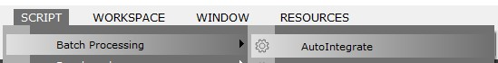{kind=link}
Click AutoIntegrate in the Script/Batch Processing menu to start the script.
Starting the script the script from the script editor
Starting from AutoIntegrate version 1.56 there is a dependency to ImageSolver script in the PixInsight distribution. This means that ImageSolver files must be in the ../AdP directory relative to AutoIntegrate directory. You can do this by creating a ../AdP directory and copying the contents of Pixinsight-install-directory/src/scripts/AdP there.
Steps to start the script from the script editor
- Download the script
- Open Script Editor in PixInsight
- Open file AutoIntegrate.js
- Press F9 to start the script from the editor
Running the script
- Add files with add buttons
- Click Run and wait until the script completes
Adding files to the script
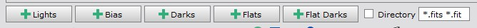{kind=link}
Files can be added to the script by clicking the buttons at the bottom of the Files tab.
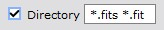{kind=link}
If Directory checkbox is checked then the script will recursively read all files from the selected directory and subdirectories. All files that match the file pattern will be added as image files. Selected directory will be used as the processing root directory. File pattern can have multiple file types separated by space.
Files accepted by the script
Script accepts all files that are supported by PixInsight. It can be used with FITS files from telescopes, or RAW files from DSLR. It can be used with both calibrated and non-calibrated files. For non-calibrated files the script can do image calibration.
Calibrated files from remote telescope systems like Telescope Live, iTelescope, Slooh and Deep Sky West have been tested and they work fine.
When using RAW or OSC files, the script by default does debayering of the files. It is recommended to use the Pure RAW setting in PixInsight. If the files are already debayered you should choose None in the Debayer list.
How the script automatically recognizes different files
- First script checks if the file has a FILTER keyword that specifies the image as Luminance, Red, Green, Blue, Ha, SII, OIII or Color data. The following FILTER values are recognized: Luminance, Clear, L, Red, R, Green, G, Blue, B, SII, S, Halpha, Ha, H, OIII, O, Color. If there is a FILTER keyword but it is not one of the recognized values, the file is treated as a color file. Only the first letter of the FILTER keyword is used to detect the filter type.
- If the FILTER keyword is not found then files that end with _L, _R, _G, _B, _H, _S, _O or _C are treated as filter files. For example ngc6514_R.fit is treated as a Red filter file.
- If files do not end with a filter letter then the file name is checked for text '_Luminance_', '_Red_', '_Green_', '_Blue_', '_SII_', '_Halpha_', '_OIII_'.
- Otherwise files are assumed to be color files.
If IMAGETYP keyword is set on files script can automatically detect bias, dark and flat calibration files when adding light files. Also flat dark files are recognized with a special value 'flat dark'.
Adding filter files manually
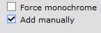{kind=link}
If automatic detection of the FILTER keyword does not correctly recognize the filter type, it is possible to manually add files for each filter. This can be enabled by checking 'Add manually' or 'Do not use FILTER keyword’ boxes.

There are separate buttons for each filter type recognized by the script. Also color/OSC/DSLR files can be added manually. Manual adding is useful if the FILTER keyword is missing or just for overriding the filter keyword.
Processing root directory
Processing root directory is the directory where output directories and files are created.
By default processing root directory is the directory of the first light file in the file list. If light files are read using a directory option then the selected directory is used as the processing root directory.
It is possible to give an absolute or relative path to the processing root directory using the Output directory field.
Output directories
AutoIntegrate will write output files into subdirectories.
- AutoOutput contains intermediate files generated during processing. Files in the AutoOutput directory can be deleted after the processing.
- AutoProcessed contains processed final images. Also integrated images and log output is here.
If image calibration is used then calibrate files are put into own subdirectories.
- AutoMaster contains generated master calibration files.
- AutoCalibrated contains calibrated light files.
Output directories are created to the processing root directory
Output images and files
Output images when using mono camera
- Integrated channel images: Integration_L, Integration_R, Integration_G, Integration_B, Integration_H, Integration_S, Integration_O
These are integrated images without any additional processing or cropping. - Combined RGB image: Integration_RGB_combined
For this image channel combination or narrowband mapping is done. - Processed images: Integration_L_processed and Integration_RGB_processed
Processed images that are still in linear stage. - Stretched images: Integration_L_HT and Integration_RGB_HT, and Integration_LRGB_HT if there is L image
- Final images: AutoLRGB or AutoRGB
Output images when using OSC/DSLR camera
- Integrated image: Integration_RGB.
Integrated image without any additional processing or cropping. - Processed image: Integration_RGB_processed
Processed image that is still in linear stage. - Stretched image: Integration_RGB_HT
- Final image: AutoRGB
Output files
- AutosaveSetup.json: By default processing information is saved into AutosaveSetup.json file. The file can be loaded later to check the processing or to fine tune some options for different processing. If not output directory is given AutosaveSetup.json file is saved into the processing root directory AutosaveSetup.json is created only after a full processing, it is not generated after AutoContinue.
- AutoIntegrate.log: After a full processing a file AutoIntegrate.log is created. It contains the output printed to the Process Console. It is useful to check the processing steps and to see if there were any problems during processing. AutoIntegrate.log is created to the AutoProcessed directory.
- AutoContinue.log: If AutoContinue is used then a file AutoContinue.log is created. It contains the output printed to the Process Console during the AutoContinue processing. It is useful to check the processing steps and to see if there were any problems during processing. AutoContinue.log is created to the AutoProcessed directory.
- ExecutedProcesses.xpsm: When script runs a full processing it always generates ExecutedProcesses.xpsm file. It can be loaded into PixInsight desktop as process icons to see the exact processes and settings that were used during processing. ExecutedProcesses.xpsm is created to the processing root directory.
- AstrobinInfo.csv: When script runs a full processing it always generates AstrobinInfo.csv file. It can be used in Astrobin to describe the imaging session. Astrobin filter numbers must be configured in the Other / Astrobin section. AstrobinInfo.csv is created to the AutoProcessed directory.
Target type
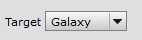{kind=link}
There is an option to select the target type for simplified processing. Target type changes some default options so that they are more likely to match to the target.
Following target types are available
- Galaxy - Works well when the target is a lot brighter than the background.
- Nebula - Works well when the target fills the whole image or is not much brighter than the background.
- Star Cluster - Like galaxy, works well since star clusters are often a lot brighter than the background.
Processing RGB files
Script automatically detects RGB files. If only LRGB, RGB or OSC/DSLR/color files are present it runs a basic RGB workflow.
Processing narrowband files
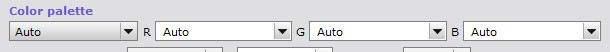{kind=link}
Narrowband images are supported by the script. They are processed mostly the same way as other images. Main difference is that you can choose the color palette that is used when mapping narrowband images to RGB channels.
Note that AutoIntegrate always uses narrowband mapping if any of the H, S, or O filters are present. So for example HaLRGB workflow always uses narrowband mapping.
Below is a sample output from AutoIntegrate script when using narrowband data and SHO color palette. Otherwise it was run with default settings but Remove green cast and Fix star colors options were checked.
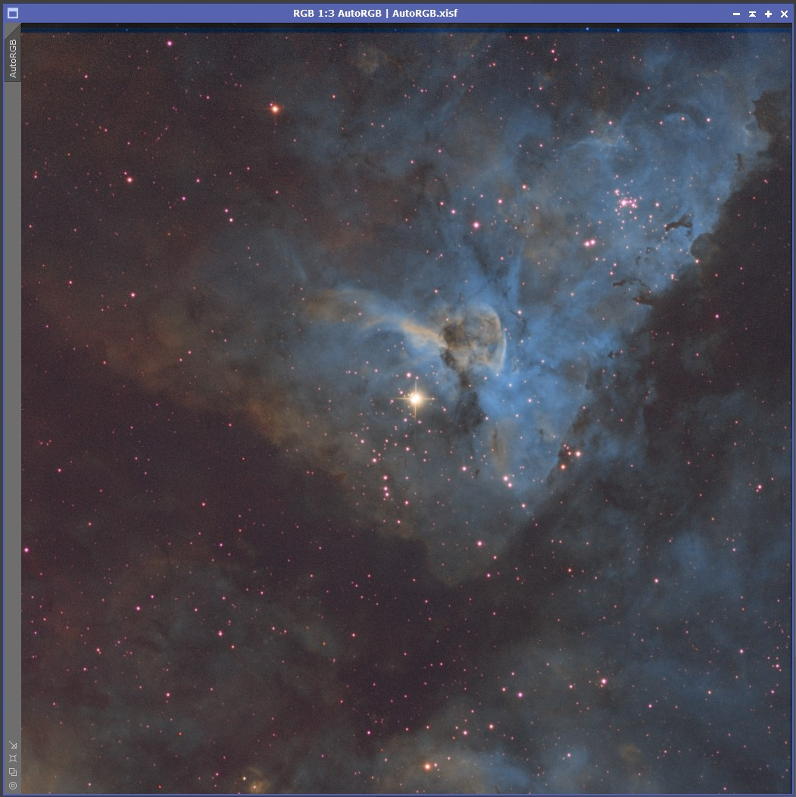
Thanks to Erik Westermann for providing narrowband data.
{kind=link}
Image calibration
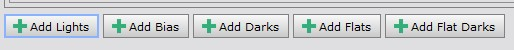{kind=link}
Script can do image calibration if needed. Two basic workflows are supported:
- Calibrating with bias, darks and flats
- Calibrating with darks, flat darks (or dark flats) and flats
If any of the calibration files are not available the script tries to run calibration with the remaining files.
If there is only one file for bias, dark or flat dark it is assumed to be a master file. If you have multiple master files for example for different binning you can give multiple master files but in that case option Master files must be checked. When multiple master files are available, the script picks the one with the same resolution.
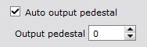{kind=link}
In Preprocessing / Image calibration section there are settings for pedestal values.
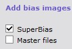 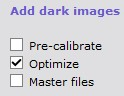 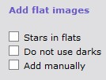 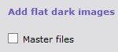{kind=link}
{kind=link}
{kind=link}
{kind=link}
In each files tab there are also some settings for calibration.
YouTube video of image calibration
Processing Flowchart
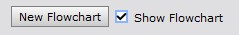{kind=link}
Generate Flowchart
Using the New Flowchart button the script will generate a flowchart of the processing workflow. Flowchart uses the current settings and images. A partially simulated minimal workflow is run to generate the flowchart information. To run the simulated workflow all relevant files must be loaded to the Files tab. A graphical version of the flowchart is printed to the preview window and a text version is printed to the process console.
Full Flowchart is available after processing. It is saved to the AutosaveSetup file and also to the setup file when available so it can be loaded later. A text version of flowchart is also printed to the AutoIntegrate log file.
Note that with a preview save button is it possible to save the flowchart image to a file.
{kind=link}
{kind=link}
{kind=link}
LRGB workflow using image calibration.
Live Flowchart
Flowchart information is always generated during processing. It can viewed using Show Flowchart checkbox. During processing Flowchart is updated after each step. By checking and unchecking the Show Flowchart checkbox it is possible to switch between the current preview image and flowchart. Flowchart also shows processing time for each step.
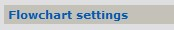{kind=link}
Flowchart settings are in the Interface tab. Note that Flowchart settings are saved to persistent module settings but values are not reset with the Set default values button.
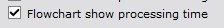{kind=link}
By default Flowchart settings option Flowchart show processing time is selected. This options shows the processing time for each step in the flowchart. If this option is not selected then only the flowchart data is shown.
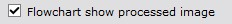{kind=link}
By default Flowchart settings option Flowchart show processed image is selected. This options shows the processed image in the preview window and the flowchart data is shown on top of the image. If this option is not selected then only the flowchart data is shown.
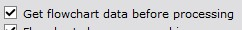{kind=link}
If Flowchart settings option Get flowchart data before processing is selected then flowchart data is collected before processing. This is useful if you want to see the full flowchart during processing. Note that this option is not selected by default. Full flowchart is not available with AutoContinue or batch processing.
{kind=link}
Live flowchart with default options
{kind=link}
Startup image
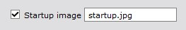{kind=link}
A startup image is shown in the preview window when the script starts. This startup image can be changed to a user selected image in the Interface / Interface settings section. The startup image can also be disabled there.
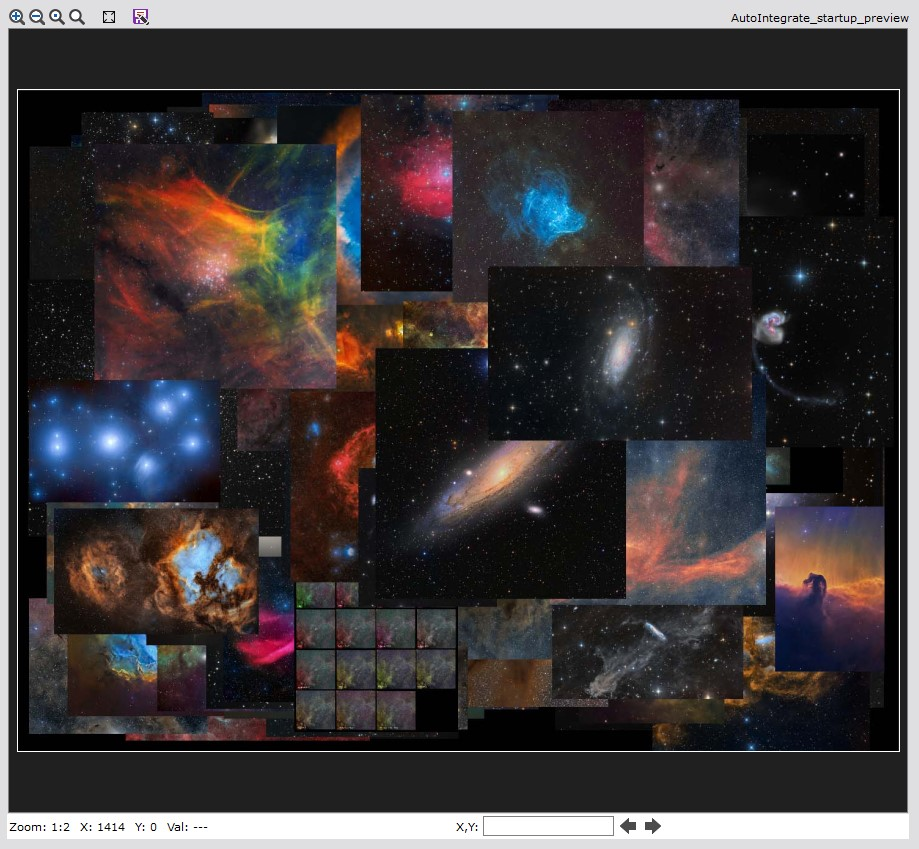{kind=link}
Embedding processing history
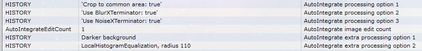{kind=link}
AutoIntegrate automatically embeds processing history into image metadata as FITS keywords. This helps to see how the image was processed. Processing history is saved using the HISTORY keywords.
Non-default processing options are saved after the base processing is run. With extra processing the processing option name with possible parameters are saved to the image metadata.
Processing history can be viewer using PixInsight File/FITS header selection.
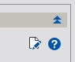{kind=link}
It is also possible to view the processing history by loading the image as a target image in the AutoIntegrate script Extra processing tab. Then the processing history is printed to the process console using the AutoIntegrate processing history button.
Known problems
-
PixInsight strange errors.
Sometimes you may get strange errors or warning messages that look like references to undefined variables. These messages may point to the AutoIntegrate script or to internal PixInsight JavaScript classes. In that case you should reset the PixInsight JavaScript engine by giving the following command to the Process Console:
run --reset
-
AutoIntegrate does not show up in the Script/Batch Processing menu.
If AutoIntegrate does not show up in the Script/Batch Processing menu you can try to reinstall scripts by deleting the updates.xri file in the PixInsight application folder. Or you can try to repair the PixInsight installation, check for updates, close PixInsight to install updates, and restart PixInsight.
-
AutoIntegrate dialog does not fit on the screen.
AutoIntegrate dialog is quite large so in some cases it is possible that it is not fully visible on the screen and you cannot access the bottom row. In this case the problem can be the preview window size. It is possible to change the preview window size or disable preview in the Interface / Interface settings section. Note that some buttons like Exit and Run are duplicated at the top part of the dialog.
On MacOS if the PixInsight is not set to full screen mode part of the dialog may not be visible. In that case setting the screen to full screen mode helps.
- include file not found: ../AdP/CommonUIControls.js
Starting from AutoIntegrate version 1.56 there is a dependency to ImageSolver script in the PixInsight distribution. This means that ImageSolver files must be in the ../AdP directory relative to AutoIntegrate directory. If you have manually downloaded AutoIntegrate from GitHub you need to create ../AdP directory and copy the contents of Pixinsight-install-directory/src/scripts/AdP there. In Windows the default installation path to AdP is C:\Program Files\PixInsight\src\scripts\AdP.
-
Error Zero or insignificant PSF Signal Weight estimate
In some cases like when using starless images you may get an error "Zero or insignificant PSF Signal Weight estimate" in the AutoIntegrate log files. You may get rid of this problem by using an option ImageIntegration use ssweight.
Problems already fixed
-
SpectrophotometricColorCalibration - fixed in PixInsight version 1.8.9-2 build 1601
Using SpectrophotometricColorCalibration (SPCC) will mess up with the dialog window. Everything still runs fine. This seems to be a problem in the SPCC process. If you use SPCC during processing you need to close the dialog from the upper right corner close button. Using that button is not normally recommended as it does not save session settings. But in this case it is the only way to close the dialog.
-
StarXTerminator File I/O error when using an old version - fixed in August 2023
When using an old version of StarXTerminator you may get a File I/O Error and stars are not removed from the image. This error is already fixed in later versions of StarXTerminator (August 2023). When using an older version the fix is to manually start and stop the StarXTerminator process once. After that StarXTerminator works also from AutoIntegrate script.
Blinking, sorting and filtering data
Blinking
It is possible to blink images in the file list by scrolling images with a mouse or arrow keys. This is useful for visually checking the quality of the images.
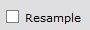{kind=link}
It is also possible to resample images to a lower resolution for blinking by selectoing the Resample checkbox below the preview image. This is useful for large images where blinking would be too slow. Note that only the preview image is resampled, not the original image. Resample settings are in the Interface / Interface settings section.
Sorting and filtering file lists
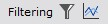{kind=link}
Filtering options are used to filter images using current weighting and filtering settings. Filtering settings are in the Preprocessing / Weighting and filtering section.
{kind=link}
There is a button that can be used to sort and filter files in the file list. Filtering and sorting is based on current weighting and filtering settings in the Preprocessing / Weighting and filtering settings section. Without any filtering rules files are just sorted by the sort order given in the Preprocessing / Weighting and filtering settings section. Using the mouse hover over the file name you can see the filtering and weighting information for the file. Files that do not meet the filtering criteria are marked unchecked in the file list. Note that the filtering is only available in the Lights page.
{kind=link}
There is also a button that can be used to visualize the current filtering and weighting settings. This button opens a new dialog that shows the current filtering and weighting settings. It is useful for checking how the current settings affect the file list and also update filtering settings if needed. When the dialog is closed, the file list is updated to show the current filtering. Note that dialog can be used also from the Preprocessing / Weighting and filtering section. For more details see the Metrics visualizer section.
Automatic filtering of bad files
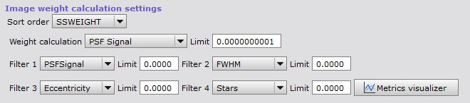{kind=link}
AutoIntegrate has a few ways to automatically filter out files based on image statistics calculated by the SubframeSelector process.
The simplest filtering uses a limit value for SSWEIGHT. Only files with calculated SSWEIGHT above the limit value are included. This is a good way to filter files if the expected SSWEIGHT values are known. Calculated SSWEIGHT values can be checked from the AutoIntegrate.log file after processing.
Additional image filtering is based on four measures. It is possible to filter images for example with PSFSignal, FWHM, Eccentricity and Stars values. Images that do not meet filtering criteria are not processed.
There are also a few ways to filter files by detecting outliers in the data set. This method does not require previous knowledge of the data. It can be useful in cases with huge data sets where filtering gets too complicated.
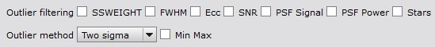{kind=link}
The following variables can be used for filtering outliers: SSWEIGHT, FWHM, Eccentricity, SNR, Star count, PSF Signal and PSF Power. Each variable is used independently to detect and filter outliers.
There are also three ways to calculate outlier filtering threshold values:
- Two sigma that filters out values that are two sigmas away from mean value.
- One sigma that filters out values that are one sigmas away from mean value.
- Interquartile range (IQR) measurement that is based on median calculations.
By default FWHM and Eccentricity are filtered for too high values, and all others are filtered for too low values. It is also possible to select filtering for both too low and high values.
Metrics visualizer
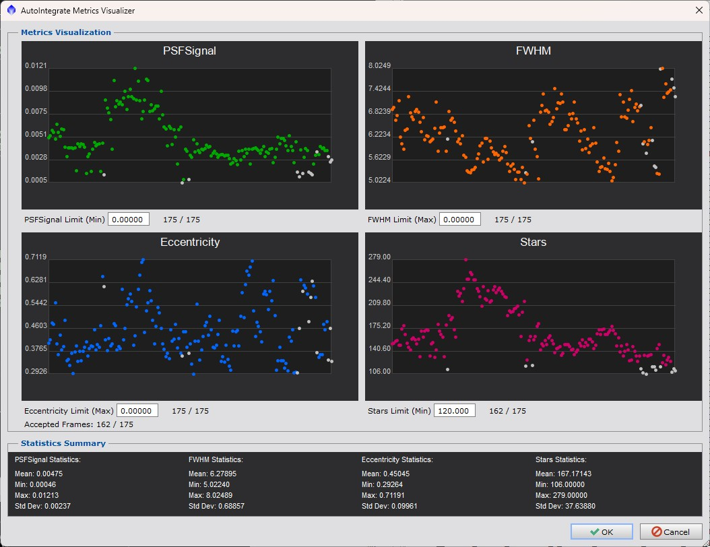{kind=link}
Metrics visualizer is a dialog that can be used to visualize the current filtering and weighting settings. It is useful for checking how the current settings affect the file list and also update filtering settings if needed. When the dialog is closed, the file list is updated to show the current filtering.
Metricss visualizer can be opened from the Preprocessing / Weighting and filtering section or by clicking the Metrics visualizer button in the Files tab.
Requirement for the metrics visualizer is that the SubframeSelector process has been run and metrics has been calculated for the files in the file list. If the SubframeSelector process has not been run, the Metrics visualizer will ask if it should be run.
Metrics are always created when light files are processed. Once measurements are done they can be saved to a Json file using the save button. Measurements are also saved to AutosaveSetup.json file. Loading this file will also load the measurements.
Processing settings
Crop to common area
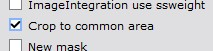{kind=link}
It is possible to automatically crop bad pixels on the sides of the images. This works by integrating all images, finding an area where all images are contributing and cropping channel images to that area.
Automatic cropping makes it easier to get an image with only good data in it. It also helps automatic processes such as stretching because only real data is included in the image.
To check how much cropping was an image file LowRejectionMap_ALL is left minimized on the screen.
Automatic cropping can be used also during AutoContinue. Cropping requires that the LowRejectionMap_ALL file is open in the PixInsight desktop. Cropping can be done only if starting from Integration_[LRGBHSO] or Integration_RGB_color files.
In the case of AutoContinue it is possible to edit the crop preview area in the LowRejectionMap_ALL image. AutoContinue will use the crop preview from LowRejectionMap_ALL. In this way it is possible to rerun the processing using a different crop if needed.
Below is an example that shows the difference between non-cropped image (left) and cropped image (middle). On the right is a LowRejectionMap_ALL file showing the cropped area.
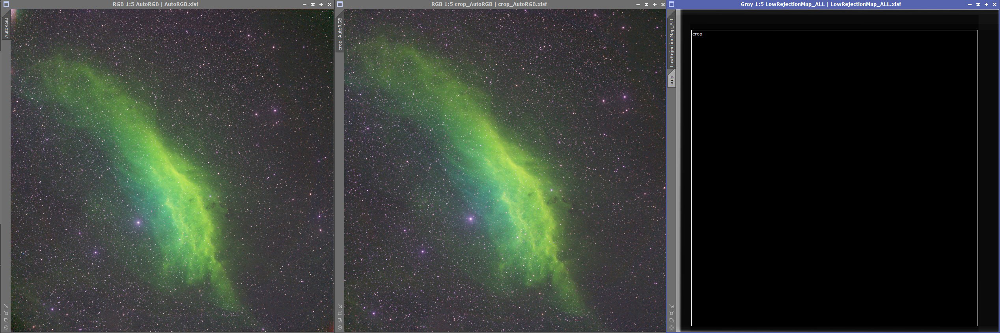{kind=link}
Sometimes the cropping also helps with automatic processing. Below is an example that shows the processing difference between non-cropped image (left) and cropped image (right). Since bad pixels on the side are cropped, automatic processing can better stretch the images since there is only real data in the image.
{kind=link}
Reference images
{kind=link}
AutoIntegrate automatically selects the reference images for star align, image integration and local normalization. By default the images with the best SSWEIGHT value are chosen.
It is possible to manually choose reference images. A reference image for star alignment is used to align all light images. For each filter reference images are used for image integration and local normalization.
{kind=link}
There is a button that can be used to calculate SSWEIGHT values for each file and automatically mark reference images to the file list. It is useful for checking which files would be chosen and fine tune the selection if needed. SSWEIGHT values are calculated for the files in file list that may not debayered or cosmetically corrected so they may differ from those calculated during processing. If no reference images are selected manually then automatically selected images are marked to the file list after processing. They can be found also from the AutoIntegrate log file.
Note that manually selecting reference images for filters do not work with OSC images if the Extract channels option is used. In that case extracted channel images should be loaded separately as LRGB images to choose correct reference images.
FastIntegration

AutoIntegrate supports the FastIntegration process. FastIntegration is a new process that is available in PixInsight version 1.8.9-2 or later. It is a faster version of the old ImageIntegration process. It is recommended to use FastIntegration instead of ImageIntegration if you want quick results or if you have a huge number of images.
{kind=link}
FastIntegration has some setup options in Proccessing 2 / FastIntegration section. By default FastIntegration skips cosmetic correction and also uses a subset of frames to find the reference image. It is possible to change these settings in the FastIntegration section.
FastIntegration supports also drizzle integration. Drizzle integration is useful when you have undersampled data and you want to increase the resolution of the image. Note that drizzle integration uses the normal DrizzleIntegration process so some performance benefits of FastIntegration are lost.
Background neutralization
For background neutralization a method is added to find a true background area in an image. True background area is then used by the BackgroundNeutralization process. A new image named AutoBackgroundModel is created that shows the background area. The AutoBackgroundModel can be edited and it is used with AutoContinue if it already exists.
{kind=link}
Finding a true background is enabled by default but can be switched off with the No auto background option in the Other / Other parameters section.
Gradient correction
Selecting gradient correction process
Multiple options for gradient correction are available. The default option is to use the GradientCorrection process.
{kind=link}
{kind=link}
There are options to use the following processes for gradient correction.
- ABE (AutomaticBackgroundExtractor)
- DBE (DynamicBackgroundExtraction)
- MultiscaleGradientCorrection
- GraXpert
Gradient correction is selected in the Settings / Tools section.
Notes on different gradient correction methods:
- When DBE is used, sample points are set automatically for the image.
- If GraXpert is used, it must be installed separately as it is an external tool.
- When using MultiscaleGradientCorrection you need to set up MARS database in PixInsight. Note that the MARS database does not yet cover the whole sky. If the image area is not in the MARS database, normal GradientCorrection is used. Also the image must be plate solved when using MultiscaleGradientCorrection.
For setting the parameters for the gradient correction processes, see Postprocessing / Gradient correction, ABE settings, DBE settings section and Tools / GraXpert section.
When to run gradient correction
{kind=link}
There are options to select when gradient correction is done. The default option is not to do gradient correction. One of these options must be selected to do gradient correction. ALso multiple options can be selected at the same time.
- Gradient correction on channel images
- Gradient correction on combined images
- Gradient correction on stretched images
When the gradient correction is done is selected in the Settings / Image processing parameters section.
Exclusion area for DBE
{kind=link}
When using DBE it is possible to exclude an area for selecting sample points. This can be useful for example when there is nebulosity with low brightness in the image. Exclusion area is used also when selecting background sample for background neutralization.
Exclusion area is set in the Postprocessing / Gradient correction, ABE settings, DBE settings section. It opens a new dialog where you can select the exclusion area. From the drop down list is is possible to select the image that is used for selecting the exclusion area. If image is non-linear it is auto streched before for the the exclusion area dialog.
If images are not well aligned, it it recommended to use the Settings / Image processing parameters / Integrate only option. This will align the images before the exclusion area is selected. Autocontinue can then be used to continue the processing.
{kind=link}
Image stretching
{kind=link}
AutoIntegrate offers a few options to stretch an image from linear to non-linear.
- Auto STF - Uses auto Screen Transfer Function.
- Masked Stretch - Uses MaskedStretch to stretch an image.
- Masked+Histogram Stretch - Uses MaskedStretch with Histogram prestretch to stretch an image.
- Histogram stretch - Using simple histogram transformation to get histogram median or peak to the target value.
- Other stretch methods
Auto STF
Auto STF is the default stretch. It is good in most cases. It can be fine tuned with STF targetBackground parameter. If you get too bright an image you can try lowering targetBackground value.
Masked Stretch
Masked Stretch is a good choice when Auto STF does not give a good image. For example with bright galaxy images Masked Stretch is a good choice as it keeps brightness in control and gives better saturation.
Masked+Histogram Stretch
A minimal Histogram based stretch is done before Masked Stretch. This can help with stars that can be too pointlike with Masked Stretch. There is a separate parameter for the histogram prestretch target.
Histogram stretch
Histogram stretch is a very simple stretch that moves the histogram median or peak to the target value. Stretch is done iteratively in small steps.
Histogram stretch works best with images that are processed with the Crop to common area option.
Other stretch methods
There are also a few other stretch methods available. These could be described as experimental. They may not be as useful as other stretch methods but they can be helpful in some special cases.
{kind=link}
In the Postprocessing / Stretching section there are some settings for the stretch methods.
Noise reduction
{kind=link}
Option Auto selects automatically correct time for noise reduction. If BlurXTerminator is used, then processed linear image noise reduction is used. Otherwise channel noise reduction is used except for OSC/color images where processed linear image is used.
Option Channel image does noise reduction on each color channels and luminance image separately. This option does nothing with color/OSC images.
Option Combined image does noise reduction on combined image. Image can be from channel combination or from integrated color/OSC image. On L image noise reduction is done before processing which is the same as channel noise reduction.
Option Processed linear image does noise reduction on processed RGB image and possible luminance image in linear stage.
Option Non-linear image does noise reduction in non-linear state after stretching on combined and luminance images.
When using BlurXTerminator or GraXpert deconvolution it is recommended to do noise reduction after BlurXTerminator or GraXpert deconvolution is used. So Combined image, Processed linear image or Non-linear noise reduction should be selected. But it is always good to experiment what is best for your own data.
By default noise reduction uses MultiscaleLinerTransform. There are also several AI tools available for noise redution: NoiseXTerminator, GraXpert denoise or DeepSNR.
Color calibration
{kind=link}
By default color calibration is done using the ColorCalibration process. It is run on the linear RGB image before the image is stretched to non-linear.
SpectrophotometricColorCalibration
{kind=link}
Optionally SpectrophotometricColorCalibration (SPCC) can be used for color calibration. Option Color calibration using SPCC is used to enable SPCC. SPCC is run on linear RGB image. Some configuration options are available for SPCC.
{kind=link}
SPCC requires that the image is plate solved. Plate solving is run automatically on Integration_RGB image which is also saved to disk. Some sources say that you should use Drizzle with scale 1 or 2 when using SPCC.
Sample narrowband color calibration output
Below is an image that shows results from different narrowband processing using different color calibration and AutoSTF auto/linked/unlinked channel options.
First row is using defaults with no color calibration and auto (unlinked) channels for AutoSTF. Second row is using SPCC with auto channel link mode. With narrowband images and SPCC the auto channel link mode AutoIntegrate uses linked channels for AutoSTF when there is H assigned into the red channel, otherwise AutoIntegrate uses unlinked channels.
{kind=link}
Image solving
{kind=link}
If the image does not have center coordinates for plate solving then coordinates can be given in a new Postprocessing / Image solving section. Coordinates can be given manually or searched using an online database (Sesame). Image solving needs correct focal length to work properly. If focal length is not embedded into image metadata it can be given in the Focal length field.
Fixing linear defects
{kind=link}
It is possible to automatically fix linear column and row defects by using linear defect detection algorithm from PixInsight LinearDefectDetection.js script. Defect information is used by CosmeticCorrection to fix the defects.
RC Astro tools support
{kind=link}
In the Settings / Tools section there are options to use RC Astro tools. In the Tools tab there are some configuration settings for RC Astro tools which are described below.
BlurXTerminator
{kind=link}
In the Tools / BlurXTerminator section are settings for BlurXTerminator.
NoiseXTerminator
{kind=link}
In the Postprocessing / Noise reduction section there are settings NoiseXTerminator.
StarXTerminator
{kind=link}
In the Tools / StarXTerminator section there are settings for StarXTerminator.
There it is possible to select other than default AI model. You can see the default AI model in the tooltip. AI models are stored in PixInsight installation directory and have .pb extension. At least in Windows they are in PixInsight/library directory.
If you are getting tiling artifacts you can check Large overlap option. It runs slower but should give better results.
GraXpert support
It is possible to use GraXpert for gradient correction, denoising or deconvolution of the image.
{kind=link}
GraXpert gradient correction
{kind=link}
For gradient correction GraXpert ca be used instead of default gradient correction. GraXpert can be used by checking the GraXpert option in the Settings / Tools section. Smoothing and correction settings can be configured. When GraXpert is used from the script it always uses the AI model when removing gradients.
By default no gradient correction is done. To use GraXpert for gradient correction you need to also check one of the gradient correction options in the Settings / Image processing parameters section.GraXpert denoise
{kind=link}
For denoising GraXpert can be used instead of default noise reduction. GraXpert can be used by checking the GraXpert denoise option in the Settings / Tools> section. Smoothing and batch size settings can be configured in the Postprocessing / Noise reduction section.
GraXpert deconvolution
{kind=link}
GraXpert deconvolution can bve used to improve start quality and sharpen the image. It is used is used instead of the default image sharpening. GraXpert deconvolution can be used by checking the GraXpert deconvolution option in the Settings / Tools> section. Strength and FWHM settings can be configured in the Tools / GraXpert section for both stars and objects (non-stars).
Option Use median FWHM uses median FWHM from the subframe selector as the FWHM value. This value is calculated during AutoIntegrate processing and saved to the image metadata. Value is also printed to the AutoIntegrate.log file with a name AutoIntegrateMEDFWHM.
GraXpert generic settings
{kind=link}
GraXpert is run as an external process so it must be installed on the computer before it can be used.
To use GraXpert first the path to the GraXpert binary must be set in the Tools / GraXpert section.
GraXpert AI model must be loaded manually before it can be used from AutoIntegrate. To load the AI model, run GraXpert manually once and close it. AutoIntegrate uses the default model.
Note that AutoIntegrate supports GraXpert version 2.2.0 or later.
StarNet and DeepSNR support
{kind=link}
StarNet2 can be used to remove stars from the image. Before StarNet2 can be used it must installed to the PixInsight.
{kind=link}
DeepSNR can be used to reduce noise the image. Before DeepSNR can be used it must installed to the PixInsight. In Postprocessing / Noise reduction section there are settings for DeepSNR.
Removing and stretching stars
{kind=link}
AutoIntegrate can automatically remove stars from an image. There are a few options to remove stars and combine them back into the starless image. Starnet2 or StarXTerminator can be used to remove stars. Star removal and stretching options are available in the Postprocessing / Star stretching and removing section.
A separate stretching is used for the stars image. Stars image stretching and combining settings are selected using the Stretching for stars and Combine options.
A separate RGB stars section has an RGB stars option that is used to create RGB stars for narrowband images. For more details see the RGB stars for narrowband images in the Narrowband specific settings section.
Remove stars from channel images

With LRGB and narrowband images this option removes stars from L, R, G, B, H, S and O channel images separately before channels are combined and while images are still in the linear stage. Star images from channels are then combined to create a star image.
With color images (DSLR/OSC) the option removes stars after color calibration while the image is still in the linear stage.
Remove stars before stretch
{kind=link}
Removes stars from combined RGB or narrowband images just before stretching while it still is in the linear stage. Stars are used only from the RGB/narrowband image, stars from the L image are not used.
For OSC data this may not work well. Separating channels might help.
Remove stars after stretch
{kind=link}
Removes stars from combined RGB or narrowband images just after stretching when the image is not any more in linear stage. Stars are used only from the RGB/narrowband image, stars from the L image are not used.
Remove stars from light images
{kind=link}
This option removes stars from each individual light image. Star removal is done after star alignment and before optional comet alignment.
Unscreen stars
{kind=link}
For both normal and extra processing there is an Unscreen stars checkbox. This option uses a bit of a different method to generate the stars image as described by Russell Croman. For details see this post: "Unscreening" and re-screening: recombining stars with starless images
The Unscreen method usually keeps star colors more correct than simple star removal. It is recommended to use the Screen method when combining star and starless images back together.
Unscreen stars is enabled by default.
Star image stretching

When stars are removed before stretching then a different stretching can be used for the stars and potentially get better star colors.
Extra remove stars
{kind=link}
Removes stars from the final image to generate a starless image and a separate stars image.
Extra Fix star cores

Sometimes star cores can be too bright and need to be fixed. There is an Extra processing option Fix star cores to fix star cores in the Extra processing / Generic extra processing section.
Reducing stars
Stars can be reduced either separately or when combining starless and star images.
{kind=link}
Extra option Smaller stars reduce star sizes. Number of iterations can be selected when reducing star sizes. Value zero uses Erosion instead of Morphological Selection
{kind=link}
When combining starless and star images it is possible to reduce stars using PixelMath expressions created by Bill Blanshan. There are three different methods: Transfer, Halo and Star. There is also a control parameter for each method. For details see this YouTube video
Combining starless and star images
{kind=link}
For combining starless and star images there are three different options: add, screen and lighten. Add is a simple PixelMath operation to add stars back. Screen and lighten are equivalent to similar Photoshop blending modes.
Combine option can be set separately in the Postprocessing / Stars stretching section and Extra processing / Generic extra processing section.
Extra processing to starless and stars images
{kind=link}
Extra processing has some additional options when combining starless and stars images.
To use the Extra processing option combine you need to have starless and stars images open on the desktop. Starless image must be selected as the target image.
With a default Auto mode AutoIntegrate tries to automatically find the stars image based on the starless image name. It assumes that your starless image name has a text starless and stars image name has a text stars. So a starless image sameprefix_starless_whatever is matched with a stars image sameprefix_stars_doesnotmatterwhatishere. You should get an error if a matching stars image is not found.
Using the select button it is possible to manually select the stars image from images open on the desktop.
Reduce stars options can be used to reduce star sizes during combine. These options use PixelMath equations created by Bill Blanshan.
Narrowband specific settings
Narrowband palettes
By default a single narrowband palette is run. It can be selected in the Settings / Narrowband processing section. If there any of the H, S or O files available then a narrowband palette is always used. Note that even if there is just H files with LRGB files then a narrowband palette is used.
Available narrowband palettes are listed below. Actual narrowband mapping is done based on the values in R, G and B edit fields. The palettes listed here are just shortcuts to the actual narrowband mapping values. You can also define your own narrowband mapping values in the User defined option or just edit the R, G and B mapping values before processing. The text in the R, G and B edit fields must be PixleMath compatible expressions.
- Auto - Automatically selects the best narrowband palette based on the available data.
- SHO
- HOS
- HSO
- OHS
- HOO
- Pseudo RGB
- Natural HOO
- 3-channel HOO
- Dynamic SHO
- Dynamic HOO
- max(R,H),G,B - Combine Ha and RGB data
- max(RGB,HOO) - Combine Ha and OIII and RGB data
- HOO Helix
- HSO Mix 1
- HSO Mix 2
- HSO Mix 3
- HSO Mix 4
- L-eXtreme SHO
- RGB - Normal RGB palette
- User defined -
- All - Process all narrowband palettes
Automatic selection of narrowband palette
The default narrowband palette is Auto. With the Auto option the script automatically selects a narrowband palette based on the available data.
Below are listed mappings available when using the Auto option.
| Input Combination | Mapping/Output |
|---|---|
| SHO | SHO |
| SHO + LRGB | SHO, RGB stars |
| SHO + RGB | SHO, RGB stars |
| HO | HOO |
| HO + LRGB | HOO, RGB stars |
| HO + RGB | HOO, RGB stars |
| H + LRGB | max(R,H),G,B |
| H + RGB | max(R,H),G,B |
Automatic processing of RGB stars
{kind=link}
When narrowband palette is used it is possible to automatically process RGB stars if RGB data is available. RGB data is processed separately from the narrowband data to create stars image. Stars are removed from the narrowband image and then combined with the RGB stars image to create a final image.
Auto narrowband palettes automatically use RGB stars option is both narrowband and RGB data is available.
Automatic processing of all palettes
Optionally it is possible to process multiple narrowband palettes in one run.
{kind=link}
Narrowband palette option All automatically processes all HSO palettes it knows. Every image is named with the palette option and automatically saved to disk as a .xisf file. Images are also left open on screen. With Save final image files selection it is possible to save them all for example as 16 bit TIFF files. You can also use extra options in images, then images with name Auto_+palette-name+_extra are created. If you want to just check the output of different palettes then you can use the Fast mode option on the Settings / Other section.

All narrowband palettes known by AutoIntegrate, and two SHO palettes after extra processing.
Automatic processing of multiple palettes
{kind=link}
With option Use multiple mappings it is possible to select needed narrowband palette mappings instead of all. Multiple mappings run the same way as all palettes option but only selected mappings are used.
The fastest way to generate all palettes is to first run processing with one palette and then use already integrated images for other palettes. For processing multiple palettes open Integration_channel files on the desktop, select All narrowband palette or multiple palettes and use AutoContinue to run palettes from already integrated channel files. If you want to just check the output of different palettes then you can use the Fast mode option on the Settings / Other section.
Foraxx palette
{kind=link}
To run Foraxx palette during the normal processing you need to select Dynamic narrowband palatte like Dynamic SHO and check the option Narrowband mapping using non-linear data.
Dynamic narrowband palettes should be run using non-linear data. With dynamic palettes the data is always stretched before running the dynamic combinations.
Foraxx extra option
{kind=link}
In the Extra processing / Narrowband extra processing section there is also an option to use the Foraxx palette for SHO and HOO images. Foraxx needs nonlinear images so it can be run after other processing. Foraxx palette is the same as Dynamic palettes with Settings / Narrowband mapping section but for SHO images also Remove green cast and Orange/blue colors options are run for the image.
Narrowband mapping extra options
{kind=link}
Another way to check different narrowband palettes is with the Narrowband mapping option in the Extra processing / Narrowband extra processing section. If the processed image is a SHO or HOO image then it is possible to try different narrowband mappings. When the Narrowband mapping option is used, channels are extracted from the SHO or HOO image and mapped again to create a new palette image.
Narrowband colorization
{kind=link}
Extra processing option Colorize narrowband is used to map narrowband (or any other) data to RGB channels using user selected hue, saturation and weight.
Image colorized using the Eagle preset.
{kind=link}
Ha to RGB mapping
Using narrowband color palette
{kind=link}
Narrowband Color palette list has a few predefined options to map Ha to RGB. It is also possible to create a custom mapping by writing PixelMath expressions to the channel boxes.
Using Ha to RGB mapping section
{kind=link}
Postprocessing / Ha to RGB mapping section is used to map Ha to the RGB red channel. Different mapping options can be selected and the mapping can be tested with a test button.
{kind=link}
There is also extra processing option Ha to RGB mapping to add Ha to RGB. In that case None combine mapping option can be used to skip mapping during processing. Then the mapping can be done using the extra option. Extra option mapping settings are taken from Postprocessing / Ha to RGB mapping section.
With extra option it is possible to use a different stretching for the Ha image. So if the galaxy image is processed with masked stretch then Ha image can be stretched with AutoSTF and combined for example with 'Max 0.7' predefined setting.
Narrowband to RGB mapping
{kind=link}
A special processing is used for narrowband to (L)RGB image mapping. It is used to enhance (L)RGB channels with narrowband data. It cannot be used without RGB filters. This mapping is similar to the NBRGBCombination script in PixInsight or as described in Light Vortex Astronomy tutorial Combining LRGB with Narrowband (Light Vortex Astronomy site is no longer available). You can find more details on parameters from those sources.
If narrowband RGB mapping is used then narrowband Color palette is not used.
With narrowband RGB mapping you can choose:
- Mapping of narrowband channels to (L)RGB channels
- Boost for (L)RGB channels
- Bandwidth for each filter
- Test the mapping with a test button
Extra processing
{kind=link}
Extra processing allows running several PixInsight processes and enhancements separately on an image. Extra processing can be run as part of the basic image workflow or it can be run separately on selected images. When extra processing is run separately on a selected image it is easy to experiment the effect of different processing in a preview window with undo and redo buttons.
Some of the extra processing that can be applied to the image include:
- Separate stars and background
- Combine starless and star images using selected option
- Clip shadows
- Gradient correction
- Darker background with a luminance mask
- ExponentialTransformation with a luminance mask
- HDRMultiscaleTransform with a luminance mask
- LocalHistogramEqualization with a luminance mask
- Add contrast
- Noise reduction
- Sharpening
- Smaller stars with a star mask.
If multiple options are selected see tooltips on the script for execution order.
In case of Run or AutoContinue, extra processing steps are applied to a copy of the final image. A new image is created with _extra added to the name. For example if the final image is AutoLRGB then a new image AutoLRGB_extra is created. AutoContinue can be used to apply extra processing after the final image is created.
Target image and apply button
{kind=link}
From a drop down list it is possible to select an image into which extra processing is applied. With the Apply button extra processing is by default run on a copy of the image. There is also a simple undo and redo mechanism to iterate with different extra processing options.
Narrowband specific extra processing
{kind=link}
There are also narrowband specific extra processing options in the Settings / Narrowband processing section. Below are listed some of the options.
- remap SHO or HOO image to a new palette
- Remove green cast, useful in SHO images
- Remove part of the green cast but leave some green color, useful in SHO images
- Fix magenta star colors often visible in SHO images
AutoContinue
{kind=link}
AutoContinue runs automatic processing from previously created LRGB/RGB, Narrowband or OSC/Color images. The idea with AutoContinue is that it is possible to start from integrated images and then run procerssing with different options. For example you can run AutoIntegrate with default settings and then use AutoContinue to run different options on the same images.
AutoContinue akjes it possible also to run manually gradient correction or histogram transformation on the automatically processed images and then again continue automatic processing from there.
AutoContinue looks for images with fixed names and if it finds them it starts processing from those images. It is also possible to load integrated images for example from WBPP to the light files. If fixed image names are not found, option Integrated lights in Files tab is checked and light files have only one image for a filter then it is considered as an integrated light image.
Image names are based on intermediate images created by the script but they have a special extension to separate them from automatically generated images. An exception is integrated channel or RGB images which can be used as a starting point to run different processing on automatically created images. They are useful for example for testing with different stretching options or narrowband palettes.
Starting points and the search order for AutoContinue are listed below
- AutoLRGB or AutoRGB - Final image for extra processing
- L_HT + RGB_HT - Manually stretched L and RGB images.
- RGB_HT - Manually stretched RGB image
- Integration_filter_GCext - Gradient corrected integrated channel images
- Integration_RGB_GCext - Gradient corrected integrated color RGB image
- Integration_filter - Integrated channel images
- Integration_RGB - Integrated RGB image
Not all images must be present, for example the L image can be missing.
Explanation of terms used in image names:
- filter = Mono camera filter name, one of L, R, G, B, H, S or O.
- CGext = Gradient Corrected image, for example manual DBE or GraXpert is run on image. Postfix can be _GC, _ABE, _DBE or _GraXpert.
Simple example of using AutoContinue
In the simplest case you can use AutoContinue after basic processing is done and all icons are still on the desktop. In that case you can for example change the stretching setting or some other options, set a new Window Prefix to avoid overwriting previous processing and then run AutoContinue.
Example to run manual gradient correction
Below is an example how to run manual gradient correction on images and then continue automatic processing from there. The example assumes that a base processing has been done with AutoIntegrate.
- First close all images on desktop. For mono camera, load channel images Integration_filter to the desktop. For example Integration_L, Integration_R, Integration_G and Integration_B. For color camera, load Integration_RGB image.
- If you want to avoid overwriting previously processed images set the Window prefix.
- Crop images to remove all black borders. If you want to use automatic cropping you should use option Save cropped images during base processing. Then it is possible to use cropped images with _crop extension.
- Run gradient correction on images. New images must have an extension like _DBE or _GraXpert. So gradient corrected Integration_R could be Integration_R_DBE, or Integration_RGB could be Integration_RGB_GraXpert.
- Select processing options and click AutoContinue.
Example to run manual stretching
Below is an example how to run manual stretching on images and then continue automatic processing from there. The example assumes that a base processing has been done with AutoIntegrate.
- First close all images on desktop. For mono camera, load images Integration_L_processed and Integration_RGB_processed to the desktop. For color camera, load Integration_RGB_processed image.
- If you want to avoid overwriting previously processed images set the Window prefix.
- Run stretching on images and rename images to L_HT and RGB_HT.
- Select processing options and click AutoContinue.
Other procesing
Extracting color channels from OSC files
{kind=link}
When processing Color/OSC/DSLR files it is possible to extract separate color channels from color data. Channels can be extracted as LRGB, HSO or HOS data. After channels are extracted, processing continues as in mono filter processing.
Channels are extracted right after cosmetic correction and debayering. Channel files are saved to disk so they can be used for processing later.
Using separate channels enables different narrowband mappings when collecting narrowband data with OSC cameras. Also LRGB data can benefit from separate processing.
Thanks to René Bondo Hoffmann for providing OSC camera data using Optolong L-eXtreme filter.
Image is processed to emulate the Hubble (SHO) color palette using the L-eXtreme SHO palette option.
Additional color processing was done after the AutoIntegrate script run.
{kind=link}
Banding reduction
Banding reduction for each light image
{kind=link}
Optionally it is possible to run Canon Banding Reduction script code inside AutoIntegrate. In section Preprocessing / Banding there are options to enable Banding reduction, select Protect highlights and Amount.
Banding reduction can be useful for Canon DSLR data and sometimes also for other OSC data too. Banding reduction is run just after debayering so it is run separately for each light image.
Banding reduction extra processing option
{kind=link}
There is also an extra processing option to run banding reduction on the final image.
Creating mosaics
Using Photometric Mosaic script
PixInsigth has great tools for creating mosaics. One such tool is the PhotometricMosaic script by John Murphy. You prepare linear images with scripts ImageSolver, MosaicByCoordinates and TrimMosaicTile and then create the mosaic using script PhotometricMosaic.
Using these tools with AutoIntegrate you first need to run a basic workflow which creates integrated linear images Integration_[LRGBHSO] for separate color channels data or Integration_RGB for OSC data. You can then create a mosaic for each channel or for OSC data.
Once you have the mosaic tiles you can load them into PixInsight with names Integration_[LRGBHSO] or Integration_RGB_color. You can then create the final image using the AutoContinue button.
Batch mode for mosaic images
{kind=link}
Batch mode is intended to be used with mosaic images. In mosaics there are several sets of images and typically the same basic processing options are used for all images. In Batch mode AutoIntegrate script automatically asks for files for each mosaic panel. You can freely choose the directories for images. Script creates a final processed image which has the same name as the directory where images were read. So if images are from directory P1 then the image name will be P1. At the end of the script only final batch mode images are left open and all intermediate images are closed. Batch mode can be enabled in the Settings / Other section.
When batch completed is it possible to save all files in a different formats by clicking a button in the section Other / Save final image files. Batch mode adds a keyword to each image and it is used to find files for saving. It is possible to save images in PixInsight .xisf format, 16-bit TIFF format or 8-bit TIFF format. If you want to assemble the final image in Photoshop, save images in 16-bit TIFF format.
Batch mode keyword is saved on disk with .xisf format but not with TIFF format. If you want to process images later and use batch save then you should save files also in .xisf format.
Note that batch mode does not create the actual mosaic image. It only creates panel images for further mosaic processing.
Binning
{kind=link}
Software binning option is available for light files. It is done as the first operation for all light files or only for color channel files. It uses the IntegerResample routine for binning. For very noisy images binning should help to reduce noise at the costs of decreased resolution. If luminance data is good then it can be useful to do binning only for color data.
Comet processing
{kind=link}
Below is the suggested workflow with comet processing in AutoIntegrate:
- Run a normal workflow to get correct stars and background objects.
- Load star aligned *_r.xisf files as light files. Those can be found from the AutoOutput directory.
- Set Window prefix to avoid overwriting files in the first step.
- Check Comet align in Settings / Image processing parameters section.
- Check star removal option (StarXTerminator or StarNet2) in Settings / Tools section.
- Check Remove stars from lights in Postprocessing / Star stretching and removing section.
- Check No CosmeticCorrection in Other / Other parameters section.
- Go to the Preprocessing / Comet alignment section.
- Fill in first and last comet position coordinates. To get the coordinates click the Preview button for the first or last image, go to preview, zoom to 1:1 view and click the comet nucleus with the left mouse button. Note that the first and last images are selected automatically based on image timestamps from the DATE-OBS keyword when images are loaded.
- Copy coordinates from the preview coordinates box and paste them to the comet coordinates box. There are arrow buttons in the preview to automatically copy coordinates.
- Use the Run button to process images.
Comet alignment will automatically skip star alignment and SCNR. Since already star aligned images (*_r.xisf) are used then Star alignment could invalidate coordinates given here and thus it is not used.
Note that using starless images may cause problems for example with ImageIntegration or BlurXTerminator. In some cases this shows as an error "Zero or insignificant PSF Signal Weight estimate" in the AutoIntegrate log files. With missing PSF error in ImageIntegration you can use an option ImageIntegration use ssweight. Sometimes on starless images PSF value can not be calculated. Then a manual value should be given or BlurXTerminator should not be used.
It is possible to manually run the CometAlignment process. Below are the steps to use AutoIntegrate with manual comet alignment:
- Run a normal workflow to get correct stars and background objects.
- Manually run the CometAlignment on star aligned *_r.xisf files. This will create *_ca.xisf files.
- Remove stars from *_ca.xisf files. StarXTerminator has a batch mode that makes this easier.
- Load comet aligned files into AutoIntegrate as lights files.
- Check Start from ImageIntegration in Other parameters.
- Use the Run button to process images.
Annotate images
{kind=link}
Annotate images extra option can be used to add annotations to the final image. When used with the Run or AutoContinue button a new image with _Annotated postfix is created. Annotate image uses PixInsight AnnotateImage script.
Note that the image must have a correct astrometric solution embedded for annotation to work. When using SPCC color calibration the astrometric solution is automatically embedded.
{kind=link}
Add signature
{kind=link}
Signature extra option is used to add signature to the final image. Signature image file must be given by the user. The signature file can be for example a .png image with a transparent background. Note that no borders are added to the image.
Optionally the signature image can be scaled relative to the main image. The scaling is given as percentage of the main image size. Signature position can also be chosen: 'Top left', 'Top middle', 'Top right', 'Bottom left', 'Bottom middle' or 'Bottom right'.
Fast mode

For faster processing for example when checking out some options or narrowband palettes it is possible to use the Fast mode option. Fast mode is enabled on the Settings / Other section. Fast mode reduces the number of images processed and uses binning to reduce image size.
Setup options
Window name prefix
{kind=link}
It is possible to give the user specified prefix to image window names. This makes all generated window names unique and allows results from multiple processing runs to be open at the same time. These images are also iconized at different columns on the screen.
By default the icon column for a new window prefix is automatically managed by the script. Script tries to track used icon column positions and assign free ones for new runs.
Sometimes, like when using multiple workspaces, this automatic management does not work optimally. In that case it is possible to manually set the icon column for a window prefix. This can be enabled by setting option Manual icon column control. The change will be effective when restarting the script.
When manual icon control is enabled there is a new control Icon column. With that control it is possible to manually set the column where icons are placed. The default for the Icon column is Auto where the icon column is chosen automatically. Last icon column is remembered and automatically restored when the script starts.
Image preview and interface configuration
{kind=link}
AutoIntegrate includes image preview functionality. It is possible to see a stretched image by clicking through the file list files. Image preview is shown in a preview window that is part of the script dialog. The image in the preview window can be zoomed and moved around.
Files in the file list have a checked flag. Using image preview functionality bad files can be unchecked. Only checked files are used for processing.
Image preview window is also used to show image files during different steps of processing. During processing images are not shown in stretched mode.
By default image preview is shown in a separate tab. When clicking a file or starting to process the preview tab is set as default. Using the Toggle side preview button image preview can be shown as a separate window on the side of the dialog.
Preview window can be disabled in the Interface / Interface settings section. Also preview window size can be changed there.
Image preview settings in Interface settings section
{kind=link}
Image histogram
By default the image histogram is displayed below the image. Histogram is updated when the image is changed. Clicking on the histogram shows some statistics. Default size for histogram is calculated automatically. Size can be adjusted in the Interface / Interface settings section and the histogram display can be disabled in the Interface / Interface settings section.
If image is linear (not stretched) then the histogram is shown using a logarithmic scale. A text Log is shown in the histogram window. If the image is stretched then the histogram uses linear scale and text Norm is shown.
Below are some configuration options for preview and generic interface
{kind=link}
{kind=link}
Full screen preview
Both dialog and preview window can be maximized to (almost) full screen. This is useful when using a small screen or otherwise when a bigger view of the image is needed.
{kind=link}
Full screen image preview button.
{kind=link}
{kind=link}
Single column interface option.
{kind=link}
Saving settings to persistent module settings
{kind=link}
It is possible to save all settings into PixInsight persistent module settings. These settings are automatically restored on startup.
All saved parameters, persistent module settings, process icon and setup file, will include only those values that are different from default values.
There is also a button to reset all parameters to default values.
Saving settings to script icon
{kind=link}
It is possible to save your own default options to a script icon. It can then be used to recall default settings. Script icons can be saved to a file.
Parameter values are first restored from persistent module settings and then from the process icon. So process icon settings overwrite persistent module settings.
Settings are saved by dragging the lower left corner triangle icon to the desktop. By double clicking the icon a script window opens. Clicking the Apply global button starts the script with those settings that are saved to the icon. PixInsight also saves MD5 checksum to the script icon. When using the script icon with a modified script you need to clear the checksum field first.
Save and restore script setup
{kind=link}
Current parameter settings and image file lists loaded into light and calibrate image pages can be saved to a setup file. That file can later be restored back to AutoIntegrate. Saved file keeps checked/unchecked status for files. The file must have a .json extension.
File paths that are in a subdirectory of the setup file are saved as relative paths. This makes it possible to move or share setup and images files and it still works in a new location. Relative paths are automatically restored as full paths.
Setup file saves only those parameters that have a non-default value. It is good to note that other parameters settings are not changed when restoring the setup. There is an option Reset on setup load to use only those settings that are loaded from the setup file. Other parameters are reset to default values.
Also window prefix and output directory are saved to a setup file.
When available the setup Json file includes ssweight values for files.
AutoIntegrate Json file format is described here: AutoIntegrate_JSON_Format.html
Autosave setup
{kind=link}
Option Autosave setup saves current setup automatically after successful processing into AutosaveSetup.json file. Autosave is done only after the Run command, it is not done after the AutoContinue command. Starting from version 1.65, Autosave setup is enabled by default.
File is saved to the default output directory. This makes it possible to use relative paths to files so it is easy to move the setup file around or even share with lights files.
Setup can be later loaded into AutoIntegrate to see the settings or run the setup again possibly with different options. If the option Add window prefix to log files is selected the current prefix is added to the autosave setup file.
Use already processed files
{kind=link}
Option Use processed files tries to use already processed files when possible. This option can be useful when adding files to an already processed set of files. Only files generated before image integration are reused.
Option works best with setup file that is saved after processing or with Autosave setup generated AutosaveSetup.json file because then star alignment reference image and possible defect info is saved.
With image calibration it is possible to use previously generated master files by loading already processed master files info calibration file lists. If only one calibration file is present then the script automatically uses it as a master file.
Other information
Process icons
{kind=link}
When script runs a full processing it always generates ExecutedProcesses.xpsm file. It can be loaded into PixInsight desktop as process icons to see the exact processes and settings that were used during processing.
Process icons can also be used to manually run the same processing again, maybe with some fine tuning. Process icons include file lists so the same files that were are used when running the process icons.
You can load process icons to the PixInsight desktop using Process / Process Icon / Load Process Icons... menu command. If you already have some process icons loaded to the desktop you can append new icons by using the Process / Process Icon / Merge Process Icons... menu command.
Process icons file is created to the processing root directory.
Some processing steps may not generate process icons. Below are listed some of steps that do not have a process icon.
- There is no process icon to create or set a mask. Masks are often used when doing for example noise reduction or color saturation.
- Astrometric solution is run using the Image solver script. So there is no process icon for that.
- There is no process icon for fixing column or row defects.
Some consideration if you plan to run manual prcessing using process icons:
- In some cases the image names used in icons may not match those created during manual processing. So you may need to adjust the file names accordingly.
- During manual processing the SSWEIGHT keyword is not written to output files. So the use of SSWEIGHT keyword is disabled in the process icons.

Astrobin session information
When script runs a full processing it always generates AstrobinInfo.csv file. It can be used in Astrobin to describe the imaging session. Astrobin filter numbers must be configured in the Other / Astrobin section. AstrobinInfo.csv is created to the AutoProcessed directory.
Running AutoIntegrate from the Command Line
You can fully automate AutoIntegrate by launching PixInsight with a script, executing your JSON-defined workflows, and then exiting, no manual interaction required.
You can start the AutoIntegrate script from the command line using the --run="path-to-script[,argument,argument,...]>" option.
AutoIntegrate accepts the following arguments:
runsetup=filename.json- Specifies the path to an AutoIntegrate JSON setup file. This file contains all the settings and file lists needed for processing.do_not_read_settings- Prevents AutoIntegrate from loading any saved settings, ensuring a clean run based solely on the provided JSON file.do_not_write_settings- Prevents AutoIntegrate from saving any settings after the script completes.
Using PixInsight command line option --force-exit you can exit PixInsight after the script finishes executing.
Example command line to run AutoIntegrate script:
"path/PixInsight.exe" --run="path/AutoIntegrate.js,runsetup=MyProcessing.json,do_not_read_settings" --force-exitAutoIntegrate Json file format is described here: AutoIntegrate_JSON_Format.html
With this setup, you can batch-process any number of AutoIntegrate JSON workflows unattended — ideal for nightly runs, CI pipelines, or large-scale reprocessing.
Embedding AutoIntegrate engine
AutoIntegrate processing engine is separated from AutoIntegrate GUI so the engine can be called without the GUI. This makes it possible to create own interfaces to AutoIntegrate engine.
A sample to show how to call AutoIntegrate engine from a PixInsight script is in the following link: TestCalibrate.js
Processing Hubble data
A YouTube video shows how to process Hubble data using AutoIntegrate script. It includes basic steps to download Hubble data and shows how to do basic processing using AutoIntegrate script.
Some tips for using AutoIntegrate script
- Very often you get good results by running the script with default settings and then continue processing in PixInsight.
- Always before running the script you should check the quality of the data using the AutoIntegrate preview functionality or using a separate Blink process. You should remove all files that have movement like wind effect or bad clouds.
- If your data quality is not the best you may want to increase noise reduction.
- When processing bright galaxy data the image may come out too bright. You can try using MaskedStretch or reduce STF targetBackground value.
- When processing nebulosity data you can try using Histogram stretch.
- With extra processing it is possible to do basic enhancements like remove stars using StarNet2 or StarXTerminator, increase contrast, run HDRMultiscaleTransform, LocalHistogramEqualization and make smaller stars automatically.
- When removing stars you often get better star color with unscreen option. When combining stars and starless in either PixInsight or Photoshop use the screen option.
- Automatic cropping is very handy. But check LowRejectionMap_ALL and verify that the crop is ok.
Tips for processing One Shot Color (OSC) or RAW files
- Default options are typically a pretty good start for color images. If there is a strong color cast and/or vignetting it is worth trying with Gradient correction on combined images and Use BackgroundNeutralization options. Sometimes also choosing a different setting in the Link RGB channels option helps.
- For OSC/DSLR files PixInsight should be put into Pure RAW mode. It can be set in Format Explorer by double clicking RAW format. AutoIntegrate does debayering of images so no automatic debayering should be done.
Other resources
AutoIntegrate resources
Erik Westermann has a web site Remote Astrophotography. He talks about AutoIntegrate in his blog post PixInsight AutoIntegrate.js Processing Script. It has a lot of useful information so please check it out.
Glenn Newell discusses his latest (not so) secret PixInsight weapon, the AutoIntegrate script in the San Jose Astronomical Association (SJAA) meeting. Link to the YouTube presentation is: SJAA Imaging Special Interest Group 05 18 2021
Videos on PixInsight
There are a huge number of videos available on PixInsight. A few that I have seen often recommended are Visible Dark on YouTube or Adam Block on YouTube or on his site.
Reading on PixInsight
Written information on PixInsight may not be as up to date as videos but they are still worth a check. At least the book Inside PixInsight by Warren A. Keller is good.
List of processes used by AutoIntegrate
Below are listed PixInsight processes that may be used by AutoIntegrate script with default LRGB processing. AutoIntegrate writes processing output to the Process Console window and to AutoIntegrate.log file. Details of processing steps can be found from the header block of the source code.
- ImageCalibration
- IntegerResample
- CosmeticCorrection
- Debayer
- ChannelExtraction
- SubframeSelector
- StarAlignment
- CometAlignment
- LocalNormalization
- ImageIntegration
- FastIntegration
- DrizzleIntegration
- PixelMath
- LinearFit
- ScreenTransferFunction
- HistogramTransformation
- MultiscaleLinearTransform
- Convolution
- StarMask
- ATrousWaveletTransform
- ChannelCombination
- ColorCalibration
- SpectrophotometricColorCalibration
- CurvesTransformation
- LRGBCombination
- ArcsinhStretch
- MaskedStretch
- ACDNR
- AutomaticBackgroundExtractor
- DynamicBackgroundExtraction
- GraXpert (external process)
- GradientCorrection
- MultiscaleGradientCorrection
- SpectrophotometricFluxCalibration
- SCNR
- TGVDenoise
- ExponentialTransformation
- HDRMultiscaleTransform
- LocalHistogramEqualization
- StarNet2
- DeepSNR
- StarXTerminator
- NoiseXTerminator
- BlurXTerminator
History of AutoIntegrate script
I started my astrophotography hobby with remote telescopes in 2017. I almost immediately got PixInsight and started working with FITS files. From the start I was happy with the results but also found that there are a lot of repetitive and complex tasks to be done. After a few months I even stopped my new hobby for a while. When I started astrophotography again after the summer 2018 I realized that there is this wonderful scripting capability in PixInsight. So I started developing my script. FITS files from remote telescopes were already calibrated so I did some first steps around ImageIntegration. This is where the script name comes from. Since then I have expanded the script into both image calibration and post processing.
Credits
Many thanks to Jean-Marc Lugrin for contributing brilliant Crop to common area code.
Many thanks to rob pfile for contributing the very useful Window name prefix and icon column position code. They are a great help when working with multiple images or multiple image versions.
Jean-Marc Lugrin has also created a great TestAutoIntegrate tool that automates testing. You can find it at GitHub. I have a slightly modified version of that code that works with the latest AutoIntegrate version.
Special thanks to Norman Hamann, Garth Hunt, Erik Westermann, Glenn Newell and Jari Backman for new ideas and testing different versions of the script.
Thanks to Erik Westermann for doing a great work on documenting the script in his web site https://remoteastrophotography.com/.
YouTube channel Seti Astro by Frank Marek has been a great source for new information and ideas on PixInsight and astrophotography. It has been an inspiration to several improvements done in AutoIntegrate. I highly recommend checking that channel.
AutoIntegrate Normalization option uses similar PixelMath expressions as Bill Blanshan in his Narrowband Normalization using PixInsight Pixelmath script. See more information in his YouTube channel AnotherAstroChannel.
Star Reduction equations using PixelMath are created by Bill Blanshan. For details see this YouTube video
Narrowband colorizing is inspired by Steven Miller's YouTube channel Entering Into Space, NBColourMapper script from Mike Cranfield and Adam Block, and CombineImages script by Dean Carr.
Foraxx and Dynamic palettes, credit The Coldest Nights.
The PreviewControl module is from Andres del Pozo.
Banding reduction code is from CanonBandingReduction.js by Georg Viehoever.
Routines ApplyAutoSTF and applySTF used by AutoIntegrate are from scripts that are distributed with PixInsight. Routines for Linear Defect Detection are from PixInsight scripts LinearDefectDetection.js and CommonFunctions.jsh that are distributed with PixInsight. Linear Defect Detection code is using the code from Vicent Peris.
PixInsight scripts that come with the product were a great help when developing this script. Website Light Vortex Astronomy was a great place to find details and best practices when using PixInsight. Unfortunately that site is no longer available.
This product is based on software from the PixInsight project, developed by Pleiades Astrophoto and its contributors (https://pixinsight.com/).